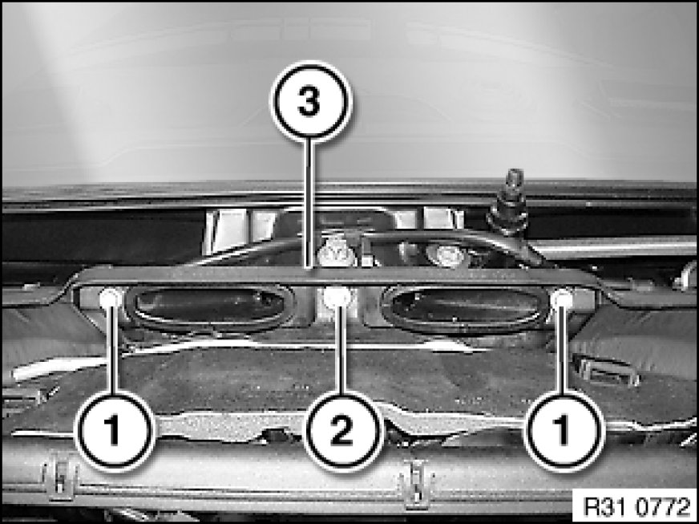
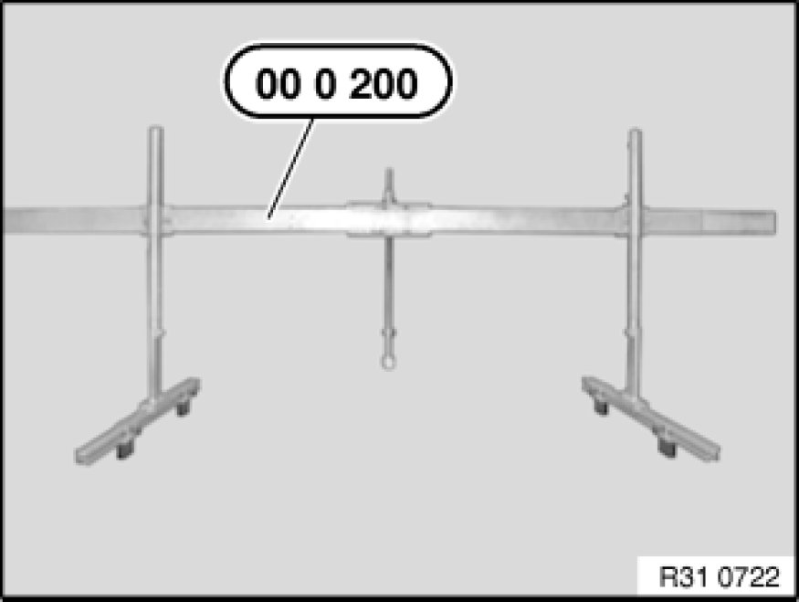
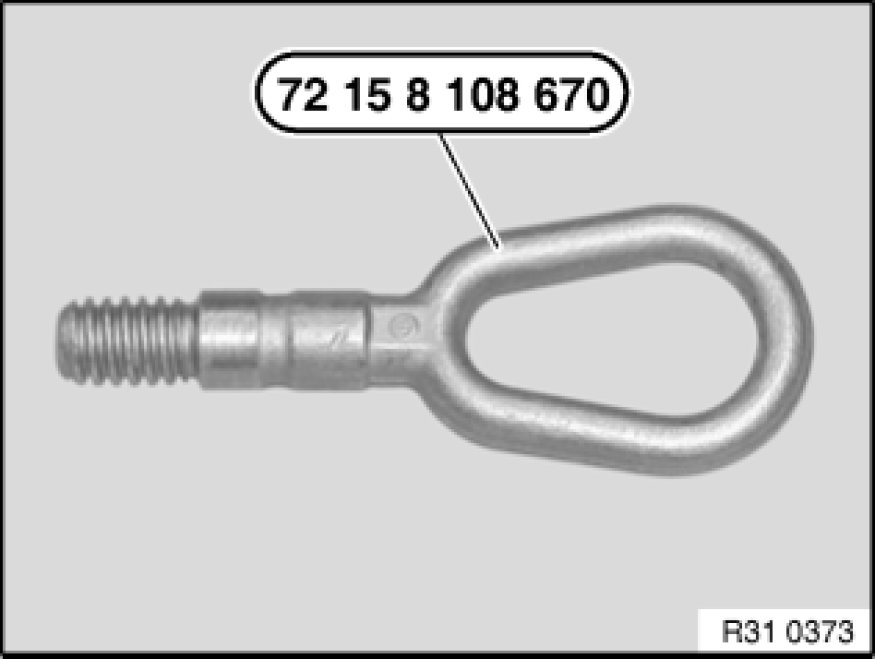
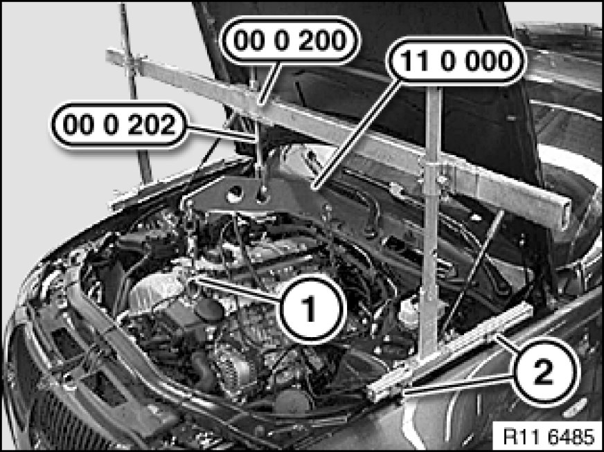
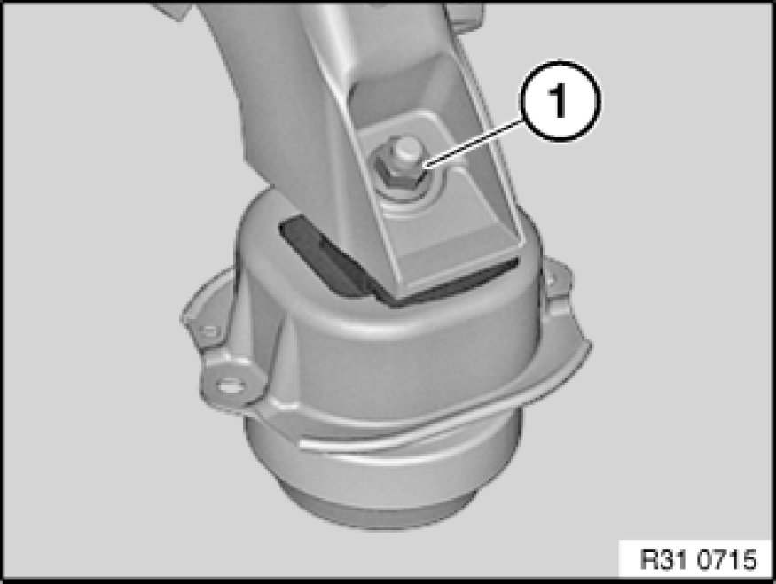

Securing Engine In Installation Position
11 00 670 - Securing engine in installation position (N52)

Special tools required:
- 00 0 200
- 00 0 202
- 00 0 204
- 00 0 208
- 11 0 000

Warning!
Risk of injury!
Observe following instructions relating to special tool:
1. Prior to each use, check the special tools for defects, modifications and operational reliability.
2. Damaged/modified special tools must not be used!
3. No changes or modifications may be made to the special tools!
4. Keep special tools dry, clean and free of grease.

Necessary preliminary tasks:
- Secure engine bonnet/hood in service position Procedures
- Remove cowl panel cover Service and Repair
- Remove intake filter housing Service and Repair
- Remove both tension struts from spring strut dome Service and Repair
- Remove acoustic cover
- Remove hose for crankshaft ventilation.

Release screws (1, 2).
Remove bulkhead (3).
Installation Note:
Make sure bulkhead is correctly seated.
M6x20 screw must be fitted in middle.

Assemble cross member 00 0 200 with special tools 00 0 202, 00 0 204, 00 0 208.

Note:
Use towing hook (72 15 8 108 670).

Important!
Avoid a change of engine position in the transverse or longitudinal direction.
Always make sure there is sufficient clearance between the engine (or its attachment parts) and the body.

Important!
Risk of damage!
With the aid of an assistant and the supports (2), place cross member 00 0 200 on the screw connections of the side panels.
Screw in towing hook (1) and tighten down to approx. 30 Nm.
Secure special tool 11 0 000 to spindle 00 0 202.
Fit suitable chains to special tool 11 0 000 and attach to towing hook (1) or engine lifting eye.
Warning!
Risk of injury!
Tighten down all adjusting screws and nuts on cross member 00 0 200.

Unscrew nuts (1).
Raise engine approx. 10 mm with cross member.
Installation Note:
Replace self-locking nuts.
Tightening torque 22 11 2AZ Specifications.
Check vacuum lines of engine mounts for correct position and connection.